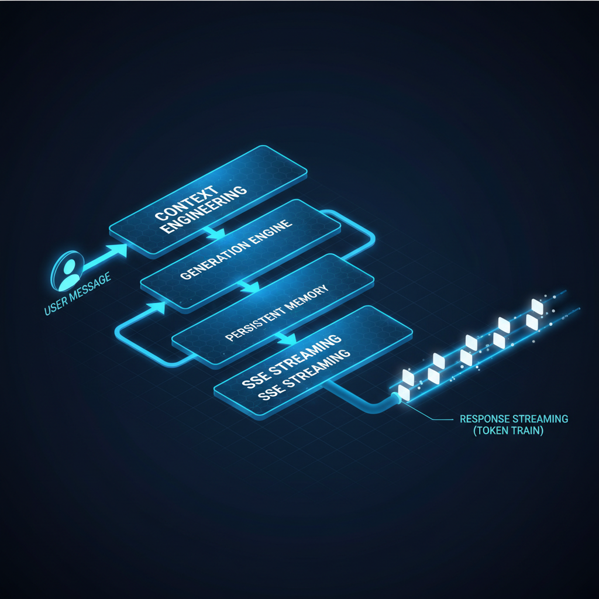
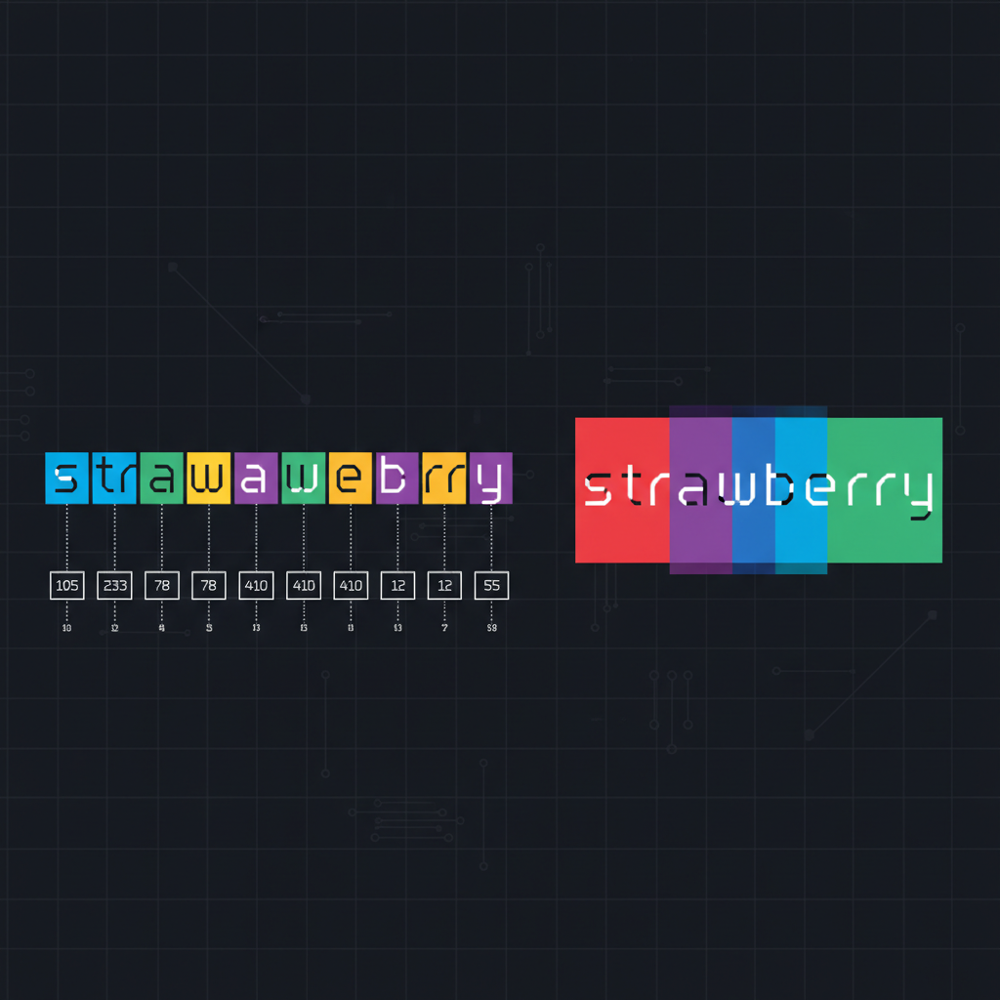

ChatGPT, Claude e Gemini resolvem bem tarefas genéricas e conversas avulsas. Mas no momento que seu assistente vira customer-facing, a equação inteira muda.
Seus usuários precisam de um assistente que conheça seu produto, suas políticas, e o histórico deles com você. Esse conhecimento mora nos seus sistemas — não nos dados de treino do modelo. Dá pra injetar em runtime, claro, mas dado proprietário vem com restrições reais: geralmente é grande demais pra caber numa context window, sensível demais pra mandar pra API de terceiro, e dinâmico demais pra ficar parado num prompt estático.
Além dos dados, você não consegue configurar comportamento por completo, não integra além de uma aba do browser, e o custo escala com cada conversa. Por isso times sérios constroem o próprio assistente — e este post (adaptação enriquecida em PT-BR do Design a personal AI chat assistant de Neo Kim e Louis-François Bouchard) cobre como.
Por que construir o seu próprio?
Quando o custo, controle, ou compliance importam, off-the-shelf vira teto baixo. Cinco razões pra justificar o investimento:
- Privacidade e controle de dados. Conversas ficam na sua infra. Você decide o que loga, por quanto tempo guarda, e quando deleta. Pra saúde, jurídico, finanças e enterprise — é requisito de compliance, não nice-to-have.
- Controle total de comportamento. Você é dono do system prompt, da persona e dos guardrails. Pode forçar um tom específico, restringir respostas ao domínio do produto, trocar o modelo subjacente, ou rodar A/B test. Com produto pronto, você recebe o que vier.
- Custo em escala. Prompt caching, model routing (modelo barato pra perguntas simples, caro pra perguntas difíceis) e estratégias de context management cortam custo drasticamente. Com milhares de conversas por dia, a economia é significativa.
- Integração no produto. O assistente vive dentro do seu app, não numa aba separada. Compartilha auth, UI e contexto do usuário. Esse nível de integração é impossível quando você envelopa o chat de outra pessoa.
- Segurança. Você controla o caminho inteiro da request: o que entra no modelo, o que sai, e quais filtros rodam no meio. Implementa suas próprias defesas contra prompt injection, output guardrails e content policies.
Off-the-shelf é ótimo pra uso pessoal e protótipo interno. Construir o seu é pra quando o assistente é o produto, ou uma feature central.
O que você vai construir

Um assistente conversacional estilo ChatGPT que você controla por completo: seu próprio system prompt, sua personalidade, suas regras. Requisitos:
- Conversa multi-turn com contexto preservado entre turnos.
- Resposta em streaming, palavras aparecendo conforme são geradas.
- Comportamento configurável — criativo pra brainstorming, preciso pra extração de dados.
- Resistente a ataques de prompt injection.
- Cost-effective em escala, milhares de conversas por dia.
- (Extra coberto adiante) Memória persistente entre sessões — lembra preferências do usuário.
O que esse sistema NÃO faz: não recupera documentos externos (sem RAG), não tem expertise de domínio além do que o modelo já sabe, e não toma ações nem chama tools. É puramente conversacional. RAG e tool calling ficam pra posts futuros — aqui o foco é dominar o esqueleto.
Pra esse build usamos uma API de modelo (OpenAI, Anthropic, ou similar). O provedor cuida de GPU, scaling e otimização de inferência — o ponto de partida certo pra quase todo time. Quando você cresce além da API, migra pra modelo open-source self-hosted servido com vLLM, llama.cpp, ou SGLang.
Parte 1 — O que acontece quando você manda uma mensagem
Quando você chama uma API de modelo, muita coisa rola entre a request e o primeiro token aparecer na tela. Você nunca precisa tocar numa GPU, mas entender o que acontece ajuda a raciocinar sobre latência, custo e trade-offs.
De texto pra tokens

Antes do modelo processar sua mensagem, ele converte texto em números. Modelos não leem palavras — eles trabalham com tokens, chunks pequenos de texto mapeados pra IDs numéricos. Um token pode ser uma palavra inteira ("the"), parte de uma palavra ("un", "believ", "able"), ou um único caractere.
O processo de quebrar texto em tokens chama tokenization. Existem várias formas:
- Por caractere: simples mas o modelo precisa processar sequências longuíssimas pra ler uma frase curta.
- Por palavra inteira: vocabulário fica enorme, e o modelo não consegue lidar com palavras que nunca viu.
- Subword tokenization: o sweet spot, e virtualmente todo modelo moderno usa.
O algoritmo mais comum é Byte Pair Encoding (BPE). BPE começa com caracteres individuais e iterativamente funde os pares mais frequentes num único token. Palavras comuns como "the" ou "and" viram tokens únicos. Palavras raras ou longas são quebradas em pedaços significativos. "Unbelievable" pode virar três tokens: "un" + "believ" + "able". O vocabulário fica gerenciável (tipicamente 30.000 a 100.000 tokens), e palavras novas são processadas via decomposição em sub-pedaços conhecidos. Ferramentas pra inspecionar tokens: OpenAI Tokenizer e tiktoken (lib Python).
É por isso que LLMs erram tarefas que pra humano são triviais. Pergunte "quantos R's tem em strawberry?" — o modelo pode errar porque nunca vê letras individuais. "Strawberry" pode ser tokenizado como "str" + "aw" + "berry", então o modelo literalmente não consegue contar os R's porque eles estão espalhados em fronteiras de token. Reverter palavra, contar caracteres, etc — tudo difícil pelo mesmo motivo.
Tokenization tem consequência prática direta pra construir chat assistant:
- Token count ≠ word count. Uma frase de 10 palavras em inglês tem tipicamente 13 a 15 tokens.
- Código costuma ser mais denso em tokens que prosa.
- Idiomas não-ingleses (incluindo PT-BR!) geralmente exigem mais tokens por palavra, porque vocabulários BPE são construídos principalmente a partir de texto em inglês. Custo em PT-BR pode ser 50–80% maior que em EN pra o mesmo conteúdo.
- Preço de API, limite de context window, e latência — tudo escala com token count.
Como o modelo chegou aqui: do pretraining ao chat
O modelo que você chama passou por um pipeline multi-estágio pra virar assistente de chat, e cada estágio tem consequência direta no produto que você está construindo.
Pretraining é onde o modelo aprende linguagem. Treinado num corpus massivo (livros, websites, código, papers), aprende a prever o próximo token dado todos os anteriores. Auto-supervisionado — ninguém rotula os dados. O modelo lê trilhões de tokens e aprende padrões. Pretraining é o que dá ao modelo conhecimento geral, gramática, capacidade de escrever código — e a tendência de produzir texto plausível, verdadeiro ou não. Quando seu assistente afirma um fato errado com confiança, esse comportamento vem do pretraining: o modelo aprendeu a produzir continuações prováveis, não verdades verificadas.
Post-training é o que transforma o preditor de texto em assistente de chat. O modelo pretreinado é bom em completar texto, mas não sabe seguir instruções, manter conversa, ou recusar pedidos prejudiciais. Conserta em duas etapas:
- SFT (Supervised Fine-Tuning): treina o modelo em exemplos curados de boas conversas — usuário faz pergunta, resposta humana mostra qual seria o ideal. Ensina o formato e estilo de assistente útil.
- RLHF (Reinforcement Learning from Human Feedback): avaliadores humanos comparam pares de respostas e escolhem a melhor. O modelo aprende dessas preferências, ficando mais útil, mais preciso, e menos propenso a output prejudicial.
É por isso que o mesmo base model pode parecer completamente diferente dependendo de como foi pós-treinado — e também por que system prompts funcionam: o modelo foi especificamente treinado pra seguir instruções nível-developer durante o post-training. Para uma visão profunda, veja o paper InstructGPT e o post da Hugging Face sobre RLHF.
Scaling laws — por que existem modelos mini e nano
Scaling laws governam a relação entre tamanho do modelo, dado de treino e performance. Pesquisa notável (Kaplan et al. na OpenAI e o paper Chinchilla da DeepMind) mostrou que performance melhora previsivelmente quando você aumenta parâmetros e tokens de treino, seguindo curvas power-law.
É por isso que a indústria continua construindo modelos maiores: dobrar o tamanho produz ganhos previsíveis e mensuráveis. Pra você como builder, scaling laws explicam o trade-off custo-capacidade que enfrenta:
- Frontier model (centenas de bilhões de parâmetros): custa mais por token, mas resolve tarefas mais difíceis. Ex: GPT-4o, Claude Sonnet 4.5, Gemini 2.5 Pro.
- Lightweight model (menos parâmetros, menos treino): mais barato e rápido, menos capaz. Ex: GPT-4o-mini, Claude Haiku, Gemini Flash.
O tiered pricing dos provedores (frontier / mini / nano) mapeia direto na curva de scaling. Entender isso permite tomar a decisão de model routing que cobrimos a seguir.
Parte 2 — Model routing: o truque que corta 60-80% do custo
A maioria das queries de um chat assistant é trivial: "qual o horário de funcionamento?", "como cancelo minha assinatura?", "oi tudo bem?". Mandar tudo isso pro frontier model é desperdício caro.
Model routing classifica cada query antes da inferência e roteia pro modelo apropriado:
- Query simples / FAQ-style → modelo mini ou nano ($0.10-0.50 / 1M tokens).
- Query média / raciocínio leve → modelo medium ($1-5 / 1M tokens).
- Query complexa / raciocínio multi-step → frontier ($10-30 / 1M tokens).
Implementações práticas: RouteLLM da LMSys, OpenRouter auto-routing, ou um classifier simples (regex + embedding similarity) custom. Em volumes acima de 10K conversas/dia, economia típica é 60–80% sem perda perceptível de qualidade.
Parte 3 — Context engineering
O system prompt é onde sua personalidade, regras, formato de output e guardrails vivem. Mas context engineering é mais que isso: é como você empacota tudo que o modelo precisa pra responder bem.
Componentes que entram em toda request:
- System prompt: identidade, regras, formato (ex: "Você é o assistente do produto X. Sempre responda em PT-BR. Recuse perguntas fora do escopo do produto.").
- Few-shot examples: 2-5 exemplos de bom comportamento. Reduz hallucination dramaticamente sem precisar fine-tuning.
- Conversation history: turnos anteriores da sessão. Compactar agressivamente quando passar de N turnos (técnica: multi-turn compaction — resumir os 10 turnos mais antigos num resumo curto).
- User context: nome, plano, perfil, idioma — injetado dinamicamente.
- Persistent memory: preferências e fatos extraídos de sessões anteriores (técnica abordada em post anterior sobre memória de agents).
- Mensagem atual do usuário: a query crua, idealmente sanitizada contra prompt injection.
Order matters. System prompt no topo, então few-shot, depois user context, depois history, e por último a mensagem atual. Modelos prestam mais atenção no início e no fim — o famoso efeito lost in the middle (Liu et al., 2023).
Parte 4 — Output controls: temperature, top-p, top-k
Esses três parâmetros controlam quão criativo ou determinístico o modelo é:
- Temperature (0 a 2): 0 = determinístico (sempre mesma resposta); 0.7 = balance natural; 1.5+ = criativo/caótico. Use 0–0.3 para extração de dados, classificação, código. Use 0.7–1.2 para brainstorming, copy criativo.
- Top-p (nucleus sampling): corta a distribuição de probabilidade no top P%. Top-p=0.9 = considera tokens que somam 90% da probabilidade. Limita tokens improváveis.
- Top-k: considera só os K tokens mais prováveis. Top-k=40 = só os 40 mais prováveis entram no sorteio.
Combine: temperature controla a "temperatura" do sorteio, top-p/top-k limitam o pool. Default razoável pra chat assistant geral: temperature=0.7, top-p=0.9. Para extração estruturada (JSON output): temperature=0, JSON mode habilitado.
Parte 5 — Como saber que funciona: evals e LLM-as-Judge
"Funcionou pra mim no terminal" não vale em produção. Você precisa de:
- Golden test set: 50–200 conversas reais ou sintéticas com a resposta ideal anotada. Rode toda vez que mudar prompt, modelo ou config.
- LLM-as-Judge: usa um modelo (de preferência mais forte que o que está sendo avaliado) pra pontuar respostas em critérios definidos (factualidade, tom, completude). Paper original (Zheng et al., 2023) tem o framework canônico.
- A/B testing online: dois prompts/modelos rodando em paralelo, métricas de negócio (CSAT, deflection rate, conversion) decidem o ganhador.
- Métricas de produção: latência (p50, p95, p99), custo médio por conversa, taxa de fallback, taxa de prompt injection detectada.
Ferramentas que automatizam evals: LangSmith, Phoenix da Arize, OpenAI Evals, Braintrust e promptfoo (CLI open-source).
Stack recomendada pra começar amanhã
- Modelo: comece com Claude Sonnet 4.5 ou GPT-4o pra prototipar. Adicione routing pra Haiku ou GPT-4o-mini quando começar a escalar.
- Framework: LangGraph ou OpenAI Swarm pra orquestração; PydanticAI se quiser type-safety forte.
- Memory store: Mem0 ou Zep pra memória persistente; Redis pra session memory.
- Auth e guardrails: Auth0 (mencionado no post original como partner), NVIDIA NeMo Guardrails, ou Guardrails AI.
- Observabilidade: LangSmith ou Helicone pra tracing e custo.
- Eval: promptfoo (CLI, free) → Braintrust quando quiser dashboard.
Conclusão
Construir o próprio assistente não é decisão de "AI hype" — é decisão de produto. Quando privacidade, controle de comportamento, integração no fluxo e custo em escala importam, off-the-shelf vira teto baixo. A maior parte da complexidade não está no modelo (a API resolve), está em context engineering, model routing, evals contínuos e guardrails.
O esqueleto que cobrimos aqui é genérico — RAG, tool calling, multi-agent, voice, são camadas que você empilha em cima. Mas se você não acerta o esqueleto, nenhuma camada extra salva. Comece simples, instrumente desde o dia 1, e itere com base em eval — não em "achismo".
Fonte original: "Design a personal AI chat assistant" por Neo Kim e Louis-François Bouchard, publicado em The System Design Newsletter em 4 de maio de 2026. Este post é uma adaptação enriquecida em PT-BR, com adições próprias de contexto, links externos, frameworks e exemplos. O post original cobre também o build prático de 8 passos (streaming, JSON output, compaction, prompt injection defense, memory) — fortemente recomendado pra quem quer ir do esqueleto à implementação.